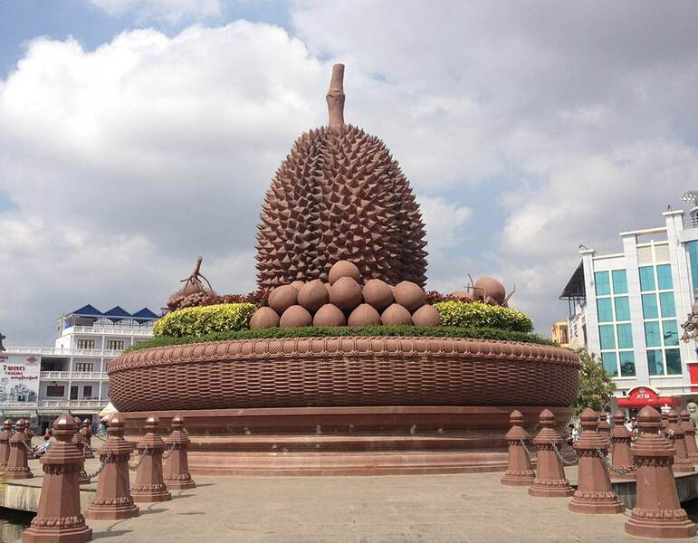

ការពិពណ៏នាអំពី ខេត្តនីមួយៗនៅក្នងប្រទេសកម្ពុជា
ទំព័រដើម
តាកែវ
ភ្នំពេញ
កែប
ព្រះសីហនុ
ស្វាយរៀង
កំពង់ធំ
បាត់ដំបង
ពោធ៏សាត់
សៀមរាប
រតនគីរី
មណ្ឌលគីរី
ក្រចេះ
ត្បូងឃ្មុំ
កំពង់ចាម
ព្រៃវែង
កណ្តាល
ឧត្តរមានជ័យ
កំពង់ឆ្នាំង
កំពង់ស្ពឺ
បន្ទាយមានជ័យ
កោះកុង
ប៉ៃលិន
កំពត
ស្ទឹងត្រែង
ព្រះវិហារ
ទំនាក់ទំនង
ខេត្តកំពត

ព័ត៌មានសង្ខេបអំពីខេត្តកំពត
> ខេត្តកំពត គឺជាខេត្តមួយស្ថិតនៅប៉ែកខាងត្បូងនៃប្រទេសកម្ពុជា ដែលមានចម្ងាយ ១៤៨ គ.ម. ពីទីក្រុងភ្នំពេញ មានព្រំប្រទល់ខាងជើងទល់នឹងស្រុកបរសេដ្ឋ ខេត្តកំពង់ស្ពឺ ខាងកើតជាប់នឹងស្រុកត្រាំកក់ និង ស្រុកគីរីវង់ ខេត្តតាកែវ ខាងត្បូងជាប់នឹងឈូងសមុទ្រ ខាងលិចជាប់នឹងស្រុកកំពង់សិលា និងស្រុកព្រៃនប់ ខេត្តព្រះសីហនុ ដូចគ្នាដែរ ខ្សែឆ្នេរដ៏វែងស្ថិតនៅលើឈូងសមុទ្រថៃទៅខាងត្បូង ខេត្តកំពតមានទីក្រុងឈ្មោះក្រុងកំពត។ កំពតមានប្រជាជន ៦២៧ ៨៨៤ នាក់[២] និងប្រកបដោយស្រុកនិងក្រុងចំនួនប្រាំបីដែលបានចែកទៅជាឃុំ-សង្កាត់ ៩២ ជាមួយនិងភូមិសរុប ៤៧៧ ភូមិ។[៣] ខេត្តកំពតមានសំណង់ប្រវត្តិសាស្រ្តជាច្រើនដូចជា ផ្ទះ ផ្សារលក់ទំនិញ រោងភាពយន្ត សាលារៀន ផ្លូវគមនាគមន៏ មន្ទីរពេទ្យជាដើម សុទ្ធសឹងជាភស្ដុតាង]បង្ហាញឱ្យឃើញពីការចាប់អារម្មណ៍របស់ពួកបារាំងទៅលើទឹកដីខ្មែរខេត្តកំពតមួយនេះ។ហើយក៏មានភ្នំបូកគោដែលជាទីចាប់អារម្មណ៍របស់ភ្ញៀវទេសចរណ៍ជាតិ និងអន្តរជាតិគ្រប់ៗរូបផងដែរ។ នៅលើនោះក៏មានកាស៊ីណូ និង មាន កន្លែងកម្សាន្តជាច្រើនដូចជា៖ វាលស្រែមួយរយ ទឹកធ្លាក់អាចមើលទេសភាព មកខាងក្រោមយ៉ាងស្រស់ស្អាត អាចចាប់ពពកបាន។-ល-។ ស្រុកទូកមាសបានតាំងទីនៅខេត្តកំពត។ទេសភាពនៃព្រែកកំពត មើលពីក្រុងកំពត ក្បែរសាលាខេត្ត ចំពីមុខភ្នំបូកគោ។ ខេត្ដតាកែវ បានចូលដែនរដ្ឋបាលខេត្ដកំពត នៅត្រង់ស្រុកជុំគី ត្រង់ចំនុចវត្ដពុទ្ធគីរី រហូតដល់ រមណីយដ្ឋានកំពូលពេជ្រ។
> ខេត្តកំពតត្រូវបានចែកចេញជាក្រុងចំនួន ១ និងស្រុកចំនួន៩ :
- ស្រុកកំពត
- ស្រុកកំពង់ត្រាច
- ស្រុកកំពង់សីលា
- ស្រុកក្រឡាហៀង
- ស្រុកឃ្មួញ
- ស្រុកគោកព្រីង
- ស្រុកស្វាយរៀង
- ស្រុកឈូក
- ស្រុកបឹងកក់
- ក្រុងកំពត